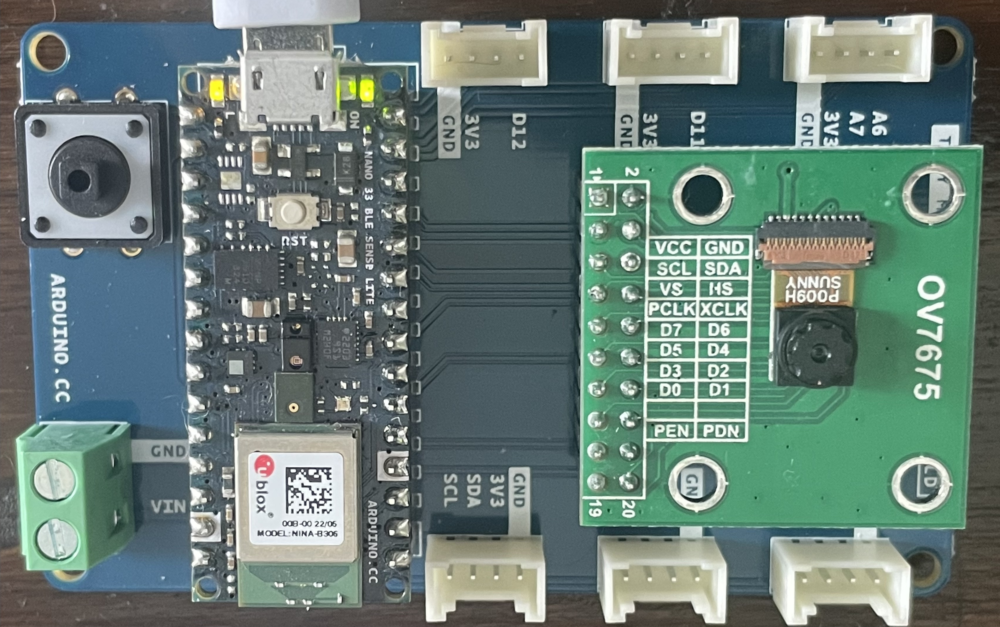
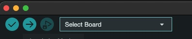
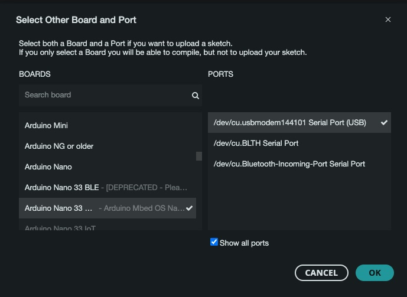

Configuring and testing Arduino BLE Sense
Arduino Tiny Machine learning kit consists of :-
- Arduino Nano 33 BLE Sense Lite
- Tiny Machine Learning Shield
- OV7675 Camera Module

Arduino setup - Arduino IDE
Download and Arduino IDE
Select 'Arduino Nano 33 BLE' as 'Board' and USB port as 'Port' that Arduino is connected to. Since I am using USB modem to connect to MacBook, my port is displayed as a USB modem.


Install libraries
- Arduino_LSM9DS1 v1.1.1
- Arduino_OV767X v0.0.2
- Harvard_TinyML v1.2.3-A
- Arduino_TensorFlowLite
While all the libraries except Arduino_TensorFlowLite are part of Arduino IDE.
To install Arduino_TinyML download the package and place it in the folder where Arduino IDE is located.
Instructions are here
Arduino setup - Micropython